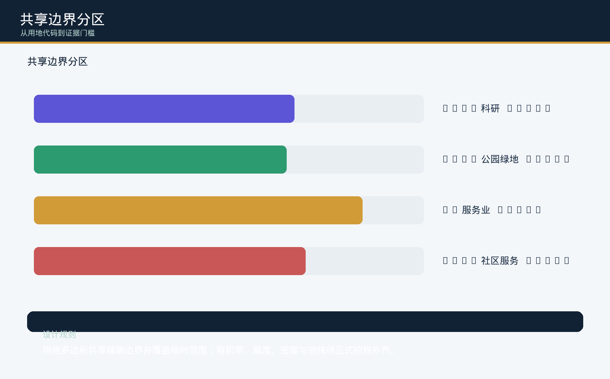
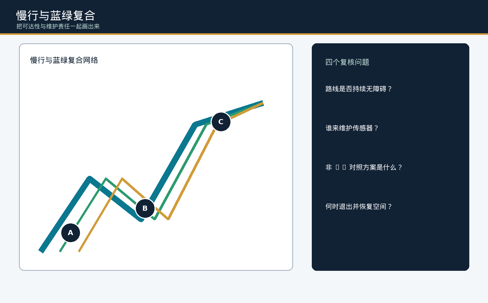
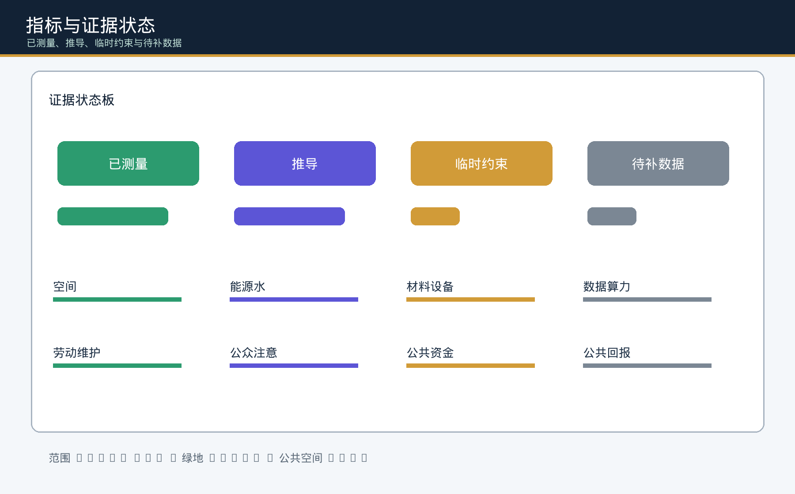

一条公共总账线、三座清算院、四个公共窗口；`PUBLIC-003` 是临时概念锚点。
20 秒核心设计判断
公共总账线先成立；AI 只能用公共净回报换取一格可撤试验位。
公共总账线连接三座清算院与四个公共窗口。连续通行、人工服务、安静休息和维护通道先于自动化交付；当前桌面候选借 1 个相对试验格，同时增加 2 个受保护用途格，退出后设备清零而公共增量保留。

只借 1 个可撤相对格；无障碍、维护与受影响群体人工门未通过就不进入候选态。
不注册、不刷脸的夜班维护角色仍可通行、找人工服务、安静休息并完成维护交接。
试验设备归零，新增通行与休息各保留 1 格；格数不是面积、容量或现场绩效。
受影响者三态旅程｜概念角色，不是真实访谈
1普通人工基线
不注册、不刷脸，沿连续通行格抵达人工服务与维护通道。
2AI 候选
借 1 格试验位，同时增加 1 格通行与 1 格安静休息；受保护用途不得减少。
3退出留存
撤走设备，保留新增通行与休息；真实无障碍、权属、消防和同意仍待现场核验。
原创边界：人工后备、AI 可退出和公共回报均有通用先例；本包只主张同分母相对格的净回报/退出留存判定。追溯：三态数据 · 正文与证据上限
空间收支表｜AI 占一格，公共空间得到什么？
同看普通人工基线、AI 候选与退出三态。12 格只表示同分母的相对布局，不是米、平方米、容量或现场客流；`PUBLIC-003` 仍是临时概念锚点。
拒签台｜亲手复算一个清账决定
选择“完整回执”或拿走一项证据。界面从本包的 12 项结构化契约计算决定，并显示谁负责、谁受影响、空间如何退回人工服务。
可追溯：24 个离线 fixtures · 方案与证据边界 · 本界面结构化数据
责任移交场｜谁真正接住七类成本？
选择一类成本，查看发起方、RACI 接收角色、受影响群体、普通非 AI 等价路径、空间后果，以及接收/拒收/恢复证据。接收未签认时，责任留在发起方。
责任移交接口7
缺字段负例7
预期拒绝命中率100%
现场接收状态未知
总览地图与证据图件
三层范围 · 用地分区 · 重点区域 · 交通慢行 · 蓝绿公共空间 · 建筑 · 更新项目 · AI 场景 · 核心指标 · 任务覆盖 · 自检状态 · 来源 · 假设




核心指标
site_area_sqm11412825.386
green_ratio0.132
public_space_ratio0.054
key_area_count3
停算清账回执
每个场景必须在扩散前留下可复核回执；任一共评角色均可拒签，拒签不会自动转成“稍后通过”。
1 · 先设对照授权、人工服务、七类成本、公共回报阈值
2 · 共同签署维护者、数据/版权、无障碍、受影响群体
3 · 清账决定专业复核，或停算、人工接管、修复/退场
离线 case24
缺证停算12
预期判定一致率100%
审计完整度100%
证据边界：24 个 case 全部是合成离线桌面审计，真实个人数据为 0；现场绩效、公众接受、工程可行性与审批状态均为待补数据。
三座清算院
众智园 · 资源清算院AI原点 · 共创清算院大钟寺 · 长用清算院京张公共总账线
限制与下一触发
组织方尚未提供正式 polygon、法定控规、权属、文保、市政、能源和劳动基线。正式数据到位后，必须替换临时几何并重算全部空间账分母、图件、HTML、PDF 与哈希。